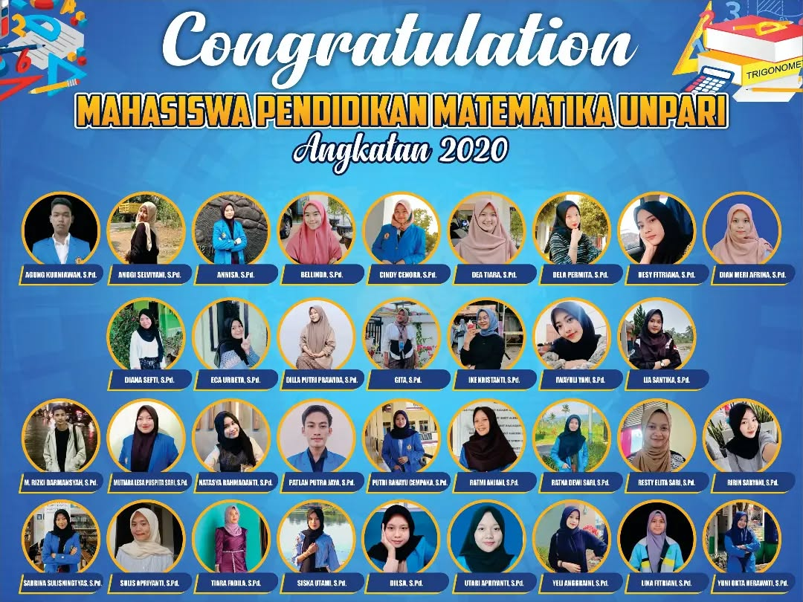
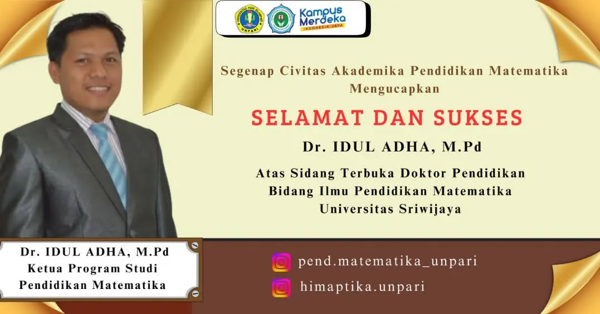
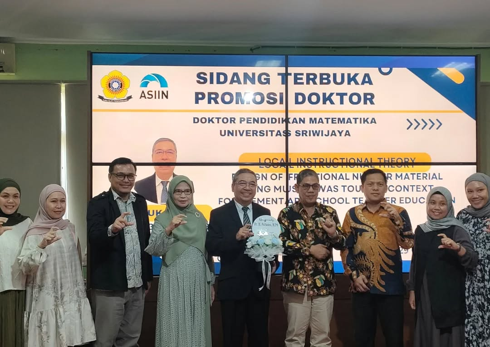
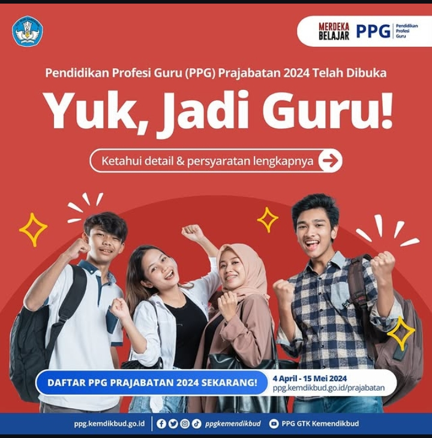

Berita Universitas
Berita Terbaru

Selamat kepada wisudawan Pendidikan Matematika Angkatan 2020!
36 Mahasiswa Program Studi Pendidikan Matematika telah berhasil menyelesaikan studi dan meraih gelar sarjana.

Selamat dan Sukses atas Sidang Terbuka Gelar Doktor
Sabtu, 12 Oktober 2024 jadi hari bersejarah bagi Bapak Idul Adha. Sebab pada hari tersebut, Dosen Universitas PGRI Silampari (UNPARI) Lubuklinggau ini sukses meraih gelar Doktor.

Selamat dan Sukses Sidang Terbuka Promosi Doktor
Selasa, 29 Oktober 2024 jadi hari bersejarah bagi Bapak Sukasno. Karena telah dinyatakan lulus dengan disertasi berjudul 'Local Instructional Theory Design of Fractional Number Material Using The Musi Rawas Tourism Context for PGSD Student.'

Kabar Baik untuk Guru di Bumi Silampari,UNPARI Selenggarakan PPG Bahasa Indonesia dan Matematika
November 2023, seluruh program studi di UNPARI terakreditasi baik sekali.selainkampus unpari juga sudah mrngsntongi izin penyelenggaraan Pendidikan Profesi Guru (PPG)